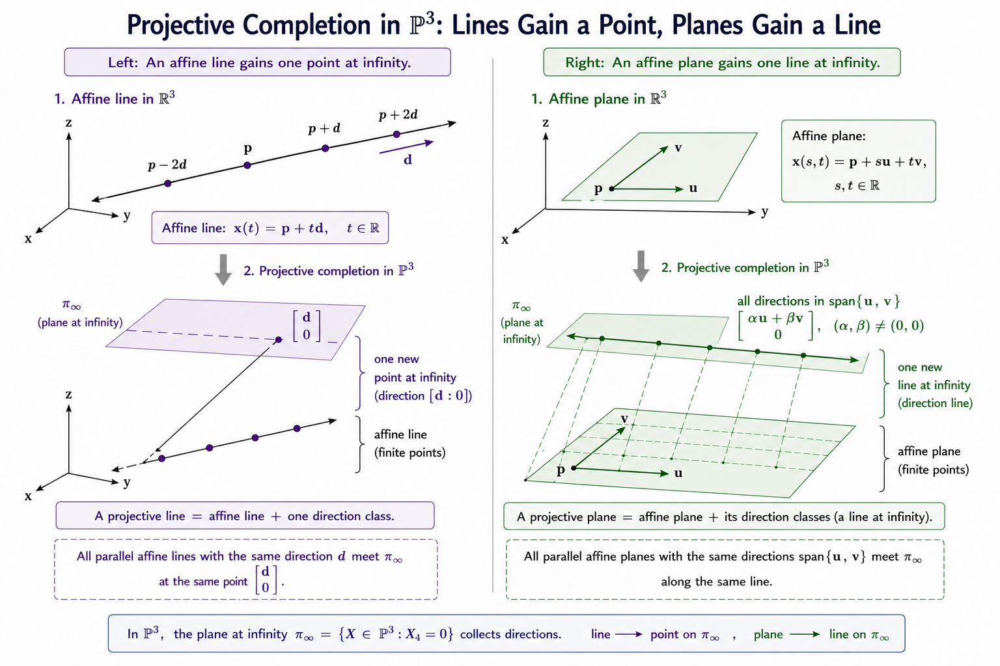
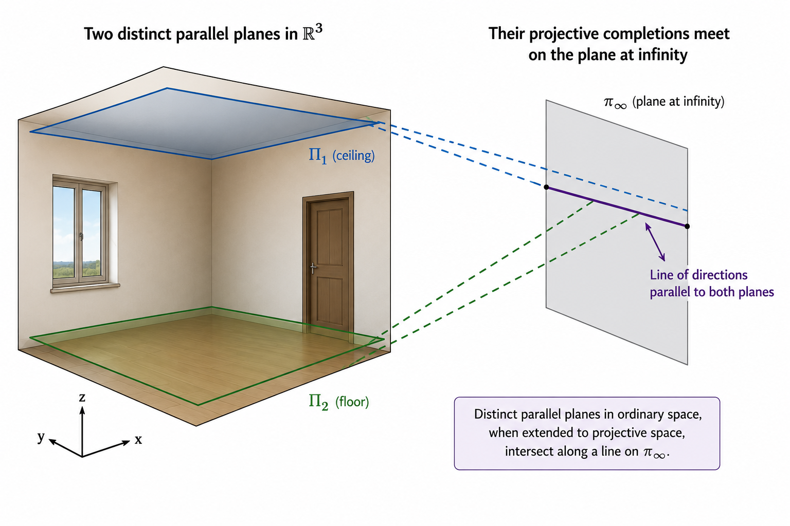
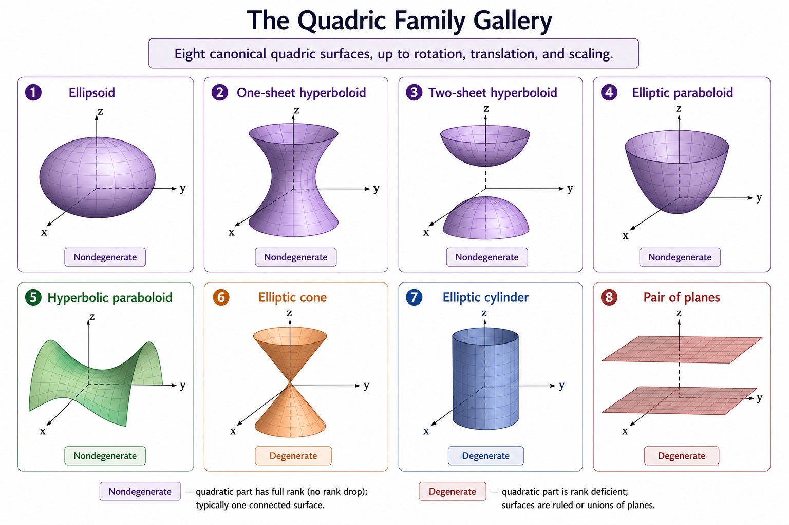
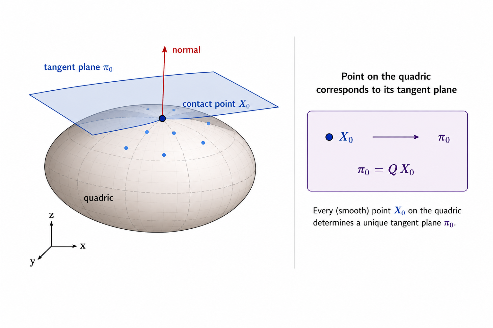
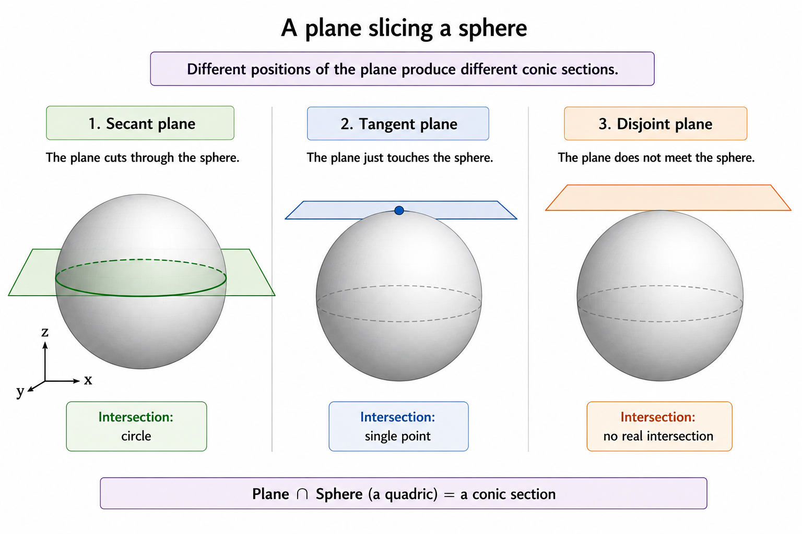
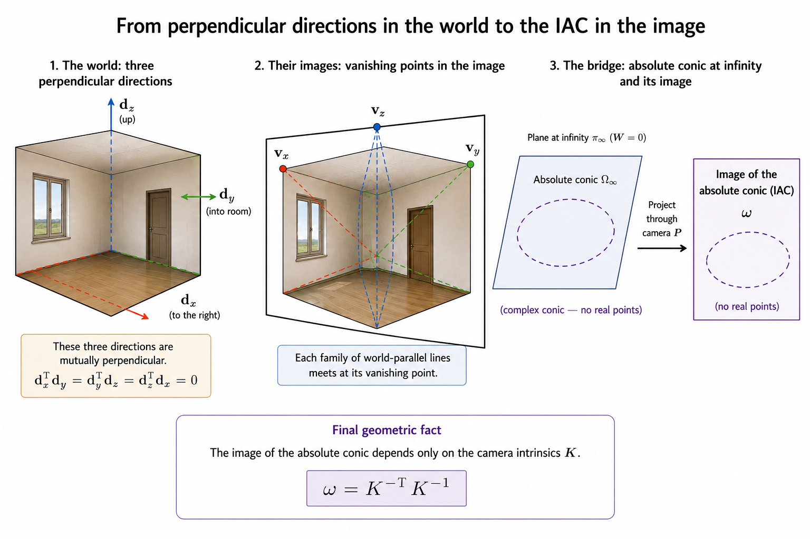

3D Computer Vision from First Principles — Part 5
Projective Three-Space \(\mathbb{P}^3\)
Introduction
In Part 1, we built \(\mathbb{P}^2\) by asking a simple question: what happens when you intersect two lines in \(\mathbb{R}^2\)? The algebra gave us triples, equivalence classes, and eventually a projective plane that could hold parallel lines.
In Part 4, we needed \(\mathbb{P}^2\) again — as the domain and codomain of the homography. The camera matrix from Part 3 restricted to a plane gave us a map \(\mathbb{P}^2 \to \mathbb{P}^2\).
But the full camera matrix is a map \(P : \mathbb{P}^3 \to \mathbb{P}^2\). We have been using \(\mathbb{P}^3\) since Part 3 without ever building it. Every lifted world coordinate \(\tilde{\mathbf{X}} = (X, Y, Z, 1)^\top\) lives in \(\mathbb{R}^4\) — the ambient space of \(\mathbb{P}^3\). It is time to construct the space properly.
The question that drives this post is the natural three-dimensional analogue of Part 1:
What happens when you solve three plane equations simultaneously?
The answer, as before, falls out of row reduction, null spaces, and equivalence classes. No new machinery needed. Just one more dimension.
Three Planes and a Homogeneous System
Consider three affine planes in \(\mathbb{R}^3\):
\[\Pi_i : a_i x + b_i y + c_i z + d_i = 0, \qquad i = 1, 2, 3\]
We want to find their common intersection. Write the system as:
\[\underbrace{\begin{pmatrix} a_1 & b_1 & c_1 & d_1 \\ a_2 & b_2 & c_2 & d_2 \\ a_3 & b_3 & c_3 & d_3 \end{pmatrix}}_{A \in \mathbb{R}^{3 \times 4}} \begin{pmatrix} x \\ y \\ z \\ 1 \end{pmatrix} = \begin{pmatrix} 0 \\ 0 \\ 0 \end{pmatrix}\]
Lift the ordinary point \((x, y, z)^\top\) to:
\[\tilde{\mathbf{x}} = \begin{pmatrix} x \\ y \\ z \\ 1 \end{pmatrix} \in \mathbb{R}^4\]
The three plane equations become the homogeneous system:
\[A\tilde{\mathbf{x}} = \mathbf{0}\]
So a point \((x, y, z)^\top\) lies on all three planes if and only if \(\tilde{\mathbf{x}} \in \mathcal{N}(A)\).
Notice the pattern. In Part 1, two line equations gave a \(2 \times 3\) matrix. Here, three plane equations give a \(3 \times 4\) matrix. Same idea, one dimension up.
Scaling the Plane Equations Changes Nothing
Multiplying a plane equation by a nonzero scalar does not change the plane. If the three rows are scaled independently by \(\lambda_1, \lambda_2, \lambda_3 \neq 0\), the new matrix is \(A' = DA\) where \(D = \text{diag}(\lambda_1, \lambda_2, \lambda_3)\) is invertible. So:
\[A'\tilde{\mathbf{x}} = \mathbf{0} \iff DA\tilde{\mathbf{x}} = \mathbf{0} \iff A\tilde{\mathbf{x}} = \mathbf{0}\]
\[\boxed{\mathcal{N}(A') = \mathcal{N}(A)}\]
The geometry depends on the row space of the system, not on the particular scaling chosen for each equation. We have seen this before — in Part 1 with lines, in Part 3 with the camera matrix, in Part 4 with the homography. Scaling never changes the null space.
A One-Dimensional Null Space
Suppose \(\text{rank}(A) = 3\). Since \(A\) has four columns, rank-nullity gives:
\[\dim\mathcal{N}(A) = 4 - 3 = 1\]
So there exists a nonzero vector \(\tilde{\mathbf{u}} = (u_1, u_2, u_3, u_4)^\top\) such that \(\mathcal{N}(A) = \text{span}\{\tilde{\mathbf{u}}\}\). Every nonzero solution is \(\lambda\tilde{\mathbf{u}}\) for some \(\lambda \neq 0\).
The system does not distinguish between \(\tilde{\mathbf{u}}\) and \(\lambda\tilde{\mathbf{u}}\). They generate the same null space. So the geometric object represented by the null space should not depend on the particular nonzero vector chosen inside it — exactly the same observation as Part 1.
The Two Cases
When \(u_4 \neq 0\): An Ordinary Point
If the fourth coordinate is nonzero, divide by it:
\[\frac{1}{u_4}\tilde{\mathbf{u}} = \begin{pmatrix} u_1/u_4 \\ u_2/u_4 \\ u_3/u_4 \\ 1 \end{pmatrix}\]
This recovers the ordinary point:
\[\boxed{\mathbf{x} = \begin{pmatrix} u_1/u_4 \\ u_2/u_4 \\ u_3/u_4 \end{pmatrix} \in \mathbb{R}^3}\]
Every nonzero scalar multiple gives the same point — the \(\lambda\) cancels in the division. When the fourth coordinate is nonzero, the entire one-dimensional null space corresponds to one ordinary point of \(\mathbb{R}^3\).
When \(u_4 = 0\): A Direction
Now suppose \(\tilde{\mathbf{u}} = (\mathbf{u}, 0)^\top\) with \(\mathbf{u} \in \mathbb{R}^3 \setminus \{\mathbf{0}\}\). Write \(A = [B \mid \mathbf{d}]\) where \(B\) is the \(3 \times 3\) matrix of normal vectors and \(\mathbf{d}\) is the column of constants. Then:
\[A\begin{pmatrix} \mathbf{u} \\ 0 \end{pmatrix} = B\mathbf{u} = \mathbf{0}\]
So \(\mathbf{u}\) is orthogonal to all three plane normals — it is a direction lying within all three planes simultaneously.
This is the same situation as Part 1: the algebra has produced a vector with fourth coordinate zero, which corresponds to no ordinary point in \(\mathbb{R}^3\). It encodes a direction, not a location.
Why does a direction arise? Recall from Part 1 the parametric argument. An ordinary affine line \(\mathbf{x}(t) = \mathbf{p} + t\mathbf{v}\) lifts to:
\[\tilde{\mathbf{x}}(t) = \begin{pmatrix} \mathbf{p} + t\mathbf{v} \\ 1 \end{pmatrix} = \begin{pmatrix} \mathbf{p} \\ 1 \end{pmatrix} + t \begin{pmatrix} \mathbf{v} \\ 0 \end{pmatrix}\]
As \(t \to \infty\), dividing by \(t\):
\[\frac{1}{t}\tilde{\mathbf{x}}(t) \longrightarrow \begin{pmatrix} \mathbf{v} \\ 0 \end{pmatrix}\]
Vectors with \(u_4 = 0\) naturally encode directions of unbounded motion in ordinary space. The fourth coordinate being zero is not a failure — it is a direction.
Defining \(\mathbb{P}^3\)
We have seen that a one-dimensional subspace of \(\mathbb{R}^4\) represents either an ordinary point (when \(u_4 \neq 0\)) or a direction (when \(u_4 = 0\)). This motivates the same equivalence relation we used in Part 1, now on \(\mathbb{R}^4 \setminus \{\mathbf{0}\}\):
\[\tilde{\mathbf{x}} \sim \tilde{\mathbf{y}} \qquad \Longleftrightarrow \qquad \tilde{\mathbf{y}} = \lambda\tilde{\mathbf{x}} \text{ for some } \lambda \neq 0\]
\[\boxed{\mathbb{P}^3 = \left(\mathbb{R}^4 \setminus \{\mathbf{0}\}\right) / {\sim}}\]
An element of \(\mathbb{P}^3\) is an equivalence class \([\tilde{\mathbf{x}}]\), not a particular vector. There is a one-to-one correspondence between points of \(\mathbb{P}^3\) and one-dimensional linear subspaces of \(\mathbb{R}^4\).
The Two Parts of \(\mathbb{P}^3\)
The property \(u_4 = 0\) or \(u_4 \neq 0\) is preserved under nonzero scaling, so \(\mathbb{P}^3\) splits cleanly into two disjoint pieces:
\[\boxed{\mathbb{P}^3 = \underbrace{\{[\tilde{\mathbf{x}}] : u_4 \neq 0\}}_{\cong\ \mathbb{R}^3} \sqcup \underbrace{\{[\tilde{\mathbf{x}}] : u_4 = 0\}}_{\cong\ \mathbb{P}^2}}\]
The first piece is in bijection with \(\mathbb{R}^3\) — every ordinary point has a canonical representative \((x, y, z, 1)^\top\). The second piece consists of all direction classes with \(u_4 = 0\) — and the direction classes of \(\mathbb{R}^3\) are themselves points of \(\mathbb{P}^2\) (equivalence classes of nonzero vectors in \(\mathbb{R}^3\)).
So:
\[\boxed{\mathbb{P}^3 = \mathbb{R}^3 \sqcup \mathbb{P}^2}\]
This is not a vector-space direct sum. It means \(\mathbb{P}^3\) consists of all ordinary points of \(\mathbb{R}^3\), together with one additional copy of \(\mathbb{P}^2\) worth of directions. The same pattern as Part 1, one dimension up:
\[\mathbb{P}^2 = \mathbb{R}^2 \sqcup \mathbb{P}^1\] \[\mathbb{P}^3 = \mathbb{R}^3 \sqcup \mathbb{P}^2\]
And one more dimension up, for completeness:
\[\mathbb{P}^n = \mathbb{R}^n \sqcup \mathbb{P}^{n-1}\]
The pattern is recursive. Each projective space adds one copy of the previous projective space worth of directions to the ordinary Euclidean space. We will not need \(\mathbb{P}^n\) for \(n > 3\) in this series, but it is good to see the pattern.
Lines in \(\mathbb{P}^3\)
We know what points of \(\mathbb{P}^3\) are. The next question is natural: given two distinct points, what is the line through them?
Take two distinct ordinary points \(\mathbf{p}, \mathbf{q} \in \mathbb{R}^3\) and lift them:
\[\tilde{\mathbf{P}} = \begin{pmatrix} \mathbf{p} \\ 1 \end{pmatrix}, \qquad \tilde{\mathbf{Q}} = \begin{pmatrix} \mathbf{q} \\ 1 \end{pmatrix}\]
The ordinary affine line through them is:
\[\mathbf{x}(t) = (1-t)\mathbf{p} + t\mathbf{q}, \qquad t \in \mathbb{R}\]
Lift a general point on this line:
\[\tilde{\mathbf{x}}(t) = \begin{pmatrix} (1-t)\mathbf{p} + t\mathbf{q} \\ 1 \end{pmatrix} = (1-t)\begin{pmatrix} \mathbf{p} \\ 1 \end{pmatrix} + t\begin{pmatrix} \mathbf{q} \\ 1 \end{pmatrix} = (1-t)\tilde{\mathbf{P}} + t\tilde{\mathbf{Q}}\]
So every lifted point on the ordinary line belongs to:
\[U = \text{span}\{\tilde{\mathbf{P}}, \tilde{\mathbf{Q}}\} \subset \mathbb{R}^4\]
Why \(\dim U = 2\)?
We need \(\tilde{\mathbf{P}}\) and \(\tilde{\mathbf{Q}}\) to be linearly independent. Suppose not — suppose \(\tilde{\mathbf{Q}} = \lambda \tilde{\mathbf{P}}\) for some scalar \(\lambda\). Then:
\[\begin{pmatrix} \mathbf{q} \\ 1 \end{pmatrix} = \lambda\begin{pmatrix} \mathbf{p} \\ 1 \end{pmatrix} \qquad \Longrightarrow \qquad \lambda = 1 \qquad \Longrightarrow \qquad \mathbf{q} = \mathbf{p}\]
But \(\mathbf{p} \neq \mathbf{q}\) by assumption. Contradiction. So \(\tilde{\mathbf{P}}\) and \(\tilde{\mathbf{Q}}\) are linearly independent and \(\dim U = 2\).
The Projective Line
Define:
\[\boxed{\mathbb{P}(U) = \{[\tilde{\mathbf{x}}] \in \mathbb{P}^3 : \tilde{\mathbf{x}} \in U \setminus \{\mathbf{0}\}\}}\]
This is the line in \(\mathbb{P}^3\) through \([\tilde{\mathbf{P}}]\) and \([\tilde{\mathbf{Q}}]\), written:
\[\mathbb{P}(U) = \ell\{[\tilde{\mathbf{P}}], [\tilde{\mathbf{Q}}]\}\]
We now identify exactly what \(\mathbb{P}(U)\) contains. Take any \([\tilde{\mathbf{y}}] \in \mathbb{P}(U)\). By definition, there exists a nonzero representative \(\tilde{\mathbf{y}} \in U\), so:
\[\tilde{\mathbf{y}} = \alpha\tilde{\mathbf{P}} + \beta\tilde{\mathbf{Q}} = \begin{pmatrix} \alpha\mathbf{p} + \beta\mathbf{q} \\ \alpha + \beta \end{pmatrix}, \qquad (\alpha, \beta) \neq (0,0)\]
Case 1: \(\alpha + \beta \neq 0\). The fourth coordinate is nonzero. Divide by \(\alpha + \beta\) and set \(t = \beta/(\alpha+\beta)\):
\[[\tilde{\mathbf{y}}] = \left[\begin{pmatrix} (1-t)\mathbf{p} + t\mathbf{q} \\ 1 \end{pmatrix}\right]\]
This is the ordinary point \((1-t)\mathbf{p} + t\mathbf{q} \in \mathbb{R}^3\). As \(t\) varies over \(\mathbb{R}\), we get all points on the affine line through \(\mathbf{p}\) and \(\mathbf{q}\).
Case 2: \(\alpha + \beta = 0\). Then \(\beta = -\alpha\) and \(\alpha \neq 0\). So:
\[\tilde{\mathbf{y}} = \alpha\tilde{\mathbf{P}} - \alpha\tilde{\mathbf{Q}} = \alpha\begin{pmatrix} \mathbf{p} - \mathbf{q} \\ 0 \end{pmatrix}\]
Nonzero scaling does not matter, so:
\[[\tilde{\mathbf{y}}] = \left[\begin{pmatrix} \mathbf{p} - \mathbf{q} \\ 0 \end{pmatrix}\right]\]
This is exactly one direction class — the unoriented direction of the affine line. This class records the direction of the ordinary line and nothing else.
Proving the reverse inclusion. We have shown \(\mathbb{P}(U) \subseteq \text{RHS}\). For the other direction: take any \(t \in \mathbb{R}\) and consider:
\[\begin{pmatrix} (1-t)\mathbf{p} + t\mathbf{q} \\ 1 \end{pmatrix} = (1-t)\tilde{\mathbf{P}} + t\tilde{\mathbf{Q}} \in \text{span}\{\tilde{\mathbf{P}}, \tilde{\mathbf{Q}}\} = U\]
And:
\[\begin{pmatrix} \mathbf{p} - \mathbf{q} \\ 0 \end{pmatrix} = \tilde{\mathbf{P}} - \tilde{\mathbf{Q}} \in U\]
Both sides are contained in each other. Therefore:
\[\boxed{\mathbb{P}(U) = \left\{\left[\begin{pmatrix} (1-t)\mathbf{p} + t\mathbf{q} \\ 1 \end{pmatrix}\right] : t \in \mathbb{R}\right\} \sqcup \left\{\left[\begin{pmatrix} \mathbf{p} - \mathbf{q} \\ 0 \end{pmatrix}\right]\right\}}\]
\[\boxed{\text{a line in }\mathbb{P}^3 = \text{an ordinary affine line} + \text{one direction class}}\]
The \(W \neq 0\) part of \(\mathbb{P}(U)\) is the familiar ordinary line in \(\mathbb{R}^3\). The \(W = 0\) part contributes one additional direction class, determined by the direction \(\mathbf{p} - \mathbf{q}\) of the ordinary line.
Planes in \(\mathbb{P}^3\)
Our discussion of planes in \(\mathbb{P}^3\) will almost mirror lines and hence, I won’t spend a lot of time deriving everything from scratch.
Take three non-collinear ordinary points \(\mathbf{p}, \mathbf{q}, \mathbf{r} \in \mathbb{R}^3\) and lift them. Define:
\[V = \text{span}\{\tilde{\mathbf{P}}, \tilde{\mathbf{Q}}, \tilde{\mathbf{R}}\} \subset \mathbb{R}^4\]
Why \(\dim V = 3\)? Suppose \(\alpha\tilde{\mathbf{P}} + \beta\tilde{\mathbf{Q}} + \gamma\tilde{\mathbf{R}} = \mathbf{0}\). The fourth coordinate gives \(\alpha + \beta + \gamma = 0\), so \(\alpha = -(\beta+\gamma)\). The first three coordinates then give \(\beta(\mathbf{q} - \mathbf{p}) + \gamma(\mathbf{r} - \mathbf{p}) = \mathbf{0}\). Since \(\mathbf{p}, \mathbf{q}, \mathbf{r}\) are non-collinear, \(\mathbf{q} - \mathbf{p}\) and \(\mathbf{r} - \mathbf{p}\) are linearly independent, forcing \(\beta = \gamma = 0\) and hence \(\alpha = 0\). So \(\dim V = 3\).
The projective plane through the three points is:
\[\boxed{\mathbb{P}(V) = \left\{\left[\alpha\tilde{\mathbf{P}} + \beta\tilde{\mathbf{Q}} + \gamma\tilde{\mathbf{R}}\right] : (\alpha, \beta, \gamma) \neq (0,0,0)\right\}}\]
The Implicit Form
The parametric description above is useful for building the plane from points. But we also need an implicit description — a single equation \(\tilde{\mathbf{x}}^\top\mathbf{v}_\perp = 0\).
Place the three lifted points into the rows of:
\[A_\text{pts} = \begin{pmatrix} \tilde{\mathbf{P}}^\top \\ \tilde{\mathbf{Q}}^\top \\ \tilde{\mathbf{R}}^\top \end{pmatrix} \in \mathbb{R}^{3 \times 4}\]
Since the three lifted vectors are linearly independent, \(\text{rank}(A_\text{pts}) = 3\), and by rank-nullity:
\[\dim\mathcal{N}(A_\text{pts}) = 4 - 3 = 1\]
Choose a nonzero \(\mathbf{v}_\perp \in \mathcal{N}(A_\text{pts})\). The variable name $_is intentional.
Then \(\mathbf{v}_\perp\) is orthogonal to all three spanning vectors of \(V\), so \(\mathbf{v}_\perp \in V^\perp\). Since \(\dim V = 3\), we have \(\dim
V^\perp = 1\), confirming \(V^\perp = \text{span}\{\mathbf{v}_\perp\}\).
For any \(\tilde{\mathbf{x}} \in V\):
\[\tilde{\mathbf{x}}^\top\mathbf{v}_\perp = (\alpha\tilde{\mathbf{P}} + \beta\tilde{\mathbf{Q}} + \gamma\tilde{\mathbf{R}})^\top\mathbf{v}_\perp = 0\]
Both spaces have dimension 3 and one contains the other, so they are equal:
\[V = \{\tilde{\mathbf{x}} \in \mathbb{R}^4 : \tilde{\mathbf{x}}^\top \mathbf{v}_\perp = 0\}\]
The same plane, two descriptions:
\[\boxed{V = \text{span}\{\tilde{\mathbf{P}}, \tilde{\mathbf{Q}}, \tilde{\mathbf{R}}\} = \{\tilde{\mathbf{x}} \in \mathbb{R}^4 : \tilde{\mathbf{x}}^\top\mathbf{v}_\perp = 0\}}\]
Parametric on the left. Implicit on the right.
Well-Definedness on Equivalence Classes
Does the equation \(\tilde{\mathbf{x}}^\top\mathbf{v}_\perp = 0\) make sense on projective points? Yes:
\[(\lambda\tilde{\mathbf{x}})^\top\mathbf{v}_\perp = \lambda\tilde{\mathbf{x}}^\top \mathbf{v}_\perp = 0\]
The \(\lambda\) cancels. Either every representative of \([\tilde{\mathbf{x}}]\) satisfies the equation, or none do. The plane coefficients are also only determined up to scale — \(\mathbf{v}_\perp\) and \(\mu\mathbf{v}_\perp\) define the same plane.
Write \(\tilde{\mathbf{x}} = (X, Y, Z, W)^\top\) and \(\mathbf{v}_\perp = (a, b, c, d)^\top\). The plane equation is:
\[\boxed{aX + bY + cZ + dW = 0}\]
When \(W \neq 0\), divide by \(W\) and set \(x = X/W\), \(y = Y/W\), \(z = Z/W\):
\[ax + by + cz + d = 0\]
The familiar ordinary affine plane equation. When \(W = 0\):
\[aX + bY + cZ = 0\]
The direction classes satisfying this are exactly the directions parallel to the plane — the two-dimensional direction subspace \(D = \text{span}\{\mathbf{q}-\mathbf{p}, \mathbf{r}-\mathbf{p}\}\).
\[\boxed{\text{a plane in }\mathbb{P}^3 = \text{an ordinary affine plane} + \text{all of its direction classes}}\]

Incidence
The fundamental relation between points and planes in \(\mathbb{P}^3\) is:
\[\boxed{[\tilde{\mathbf{x}}] \text{ lies on plane } [\mathbf{v}_\perp] \qquad \Longleftrightarrow \qquad \tilde{\mathbf{x}}^\top\mathbf{v}_\perp = 0}\]
This is the \(\mathbb{P}^3\) analogue of the incidence condition \(\boldsymbol{\ell}^\top\mathbf{u} = 0\) from Part 1. Points and planes play dual roles in \(\mathbb{P}^3\), just as points and lines played dual roles in \(\mathbb{P}^2\).
The Emerging Dictionary
\[\boxed{\begin{array}{c|c} \text{Geometry in }\mathbb{P}^3 & \text{Linear algebra in }\mathbb{R}^4 \\ \hline \text{point} & \text{1-dimensional subspace} \\ \text{line} & \text{2-dimensional subspace} \\ \text{plane} & \text{3-dimensional subspace} \\ \text{point lies on plane} & \tilde{\mathbf{x}}^\top\mathbf{v}_\perp = 0 \end{array}}\]
The geometry of points, lines, and planes has become the linear algebra of subspaces, spans, null spaces, and homogeneous equations. The same dictionary as \(\mathbb{P}^2\), one dimension up.
Intersections in \(\mathbb{P}^3\)
We now investigate intersections. Same approach as before — start in \(\mathbb{R}^3\), lift to \(\mathbb{R}^4\), study the null space, pass to equivalence classes.
Two Planes
Consider two affine planes in \(\mathbb{R}^3\):
\[\Pi_1 : \mathbf{n}_1^\top\mathbf{x} + \delta_1 = 0, \qquad \Pi_2 : \mathbf{n}_2^\top\mathbf{x} + \delta_2 = 0\]
Form the homogeneous system \(A\tilde{\mathbf{x}} = \mathbf{0}\) where:
\[A = \begin{pmatrix} \mathbf{n}_1^\top & \delta_1 \\ \mathbf{n}_2^\top & \delta_2 \end{pmatrix} \in \mathbb{R}^{2 \times 4}\]
If the two rows are linearly independent, \(\text{rank}(A) = 2\), and:
\[\dim\mathcal{N}(A) = 4 - 2 = 2\]
The null space is two-dimensional, spanned by two linearly independent vectors \(\tilde{\mathbf{u}}, \tilde{\mathbf{v}} \in \mathbb{R}^4\). Passing to equivalence classes:
\[\boxed{\mathbb{P}(\mathcal{N}(A)) = \left\{\left[\alpha\tilde{\mathbf{u}} + \beta\tilde{\mathbf{v}}\right] : (\alpha, \beta) \neq (0,0)\right\}}\]
This is a line in \(\mathbb{P}^3\). Two independent plane equations always give a line. What changes between the parallel and non-parallel cases is not the dimension of the null space — it is always 2 — but whether the null space contains any vectors with \(W \neq 0\).
A brief note on why the null space is two-dimensional for a line. An ordinary affine line has one parameter \(t\). But homogeneous coordinates carry an additional scaling parameter \(\lambda\) — every nonzero scalar multiple of a lifted point represents the same projective point. So the homogeneous solution set has two parameters (\(t\) and \(\lambda\)) even though the geometric intersection is one-dimensional.
Non-Parallel Planes
When \(\mathbf{n}_1\) and \(\mathbf{n}_2\) are not parallel, the null space contains vectors with \(W \neq 0\). Suppose \(\tilde{\mathbf{u}}\) has \(u_4 \neq 0\). Set \(\beta = t\) and solve for \(\alpha\) from \(\alpha u_4 + tv_4 = 1\) to extract ordinary points. The result is an ordinary affine line:
\[\mathbf{y}(t) = \mathbf{p} + t\mathbf{d}, \qquad t \in \mathbb{R}\]
where \(\mathbf{p} = \mathbf{u}/u_4\) and \(\mathbf{d} = \mathbf{v} - (v_4/u_4)\mathbf{u}\). The projective intersection is this affine line plus one direction class \([(\mathbf{d}, 0)^\top]\).
Distinct Parallel Planes
Now consider two distinct parallel planes — same normal, different constants:
\[\Pi_1 : \mathbf{n}^\top\mathbf{x} + \delta_1 = 0, \qquad \Pi_2 : \mathbf{n}^\top\mathbf{x} + \delta_2 = 0, \qquad \delta_1 \neq \delta_2\]
In ordinary \(\mathbb{R}^3\): \(\Pi_1 \cap \Pi_2 = \varnothing\).
The homogeneous system has matrix:
\[A = \begin{pmatrix} \mathbf{n}^\top & \delta_1 \\ \mathbf{n}^\top & \delta_2 \end{pmatrix}\]
The two rows are linearly independent — if they were proportional, the proportionality constant would have to equal both \(1\) (from the \(\mathbf{n}\) part) and \(\delta_2/\delta_1\) (from the constants), which would force \(\delta_1 = \delta_2\), contradicting distinctness. So \(\text{rank}(A) = 2\) and \(\dim\mathcal{N}(A) = 2\).
Subtract the second equation from the first:
\[(\delta_1 - \delta_2)W = 0 \qquad \Longrightarrow \qquad W = 0\]
since \(\delta_1 \neq \delta_2\). Substituting \(W = 0\) into either equation:
\[\mathbf{n}^\top\mathbf{X} = 0\]
So every vector in \(\mathcal{N}(A)\) has fourth coordinate zero:
\[\mathcal{N}(A) = \left\{\begin{pmatrix}\mathbf{d} \\ 0\end{pmatrix} : \mathbf{n}^\top\mathbf{d} = 0\right\}\]
The \(W = 1\) slice is empty — no ordinary point lies on both planes. But the projective intersection is still a line, consisting entirely of direction classes:
\[\mathbb{P}(\mathcal{N}(A)) = \left\{\left[\begin{pmatrix}\mathbf{d} \\ 0\end{pmatrix}\right] : \mathbf{d} \neq \mathbf{0},\ \mathbf{n}^\top \mathbf{d} = 0\right\}\]
These are the directions parallel to both planes — the directions in which you could travel without leaving either plane, if they were not separated by the gap \(\delta_1 - \delta_2\).
Comparing the Two Cases
\[\boxed{\begin{aligned} \text{non-parallel planes} &\longrightarrow \text{ordinary affine line} + \text{one direction class} \\ \text{distinct parallel planes} &\longrightarrow \text{no ordinary points, a line of direction classes only} \end{aligned}}\]
Two independent plane equations always produce a line in \(\mathbb{P}^3\). What changes is whether that line has any ordinary points, or lives entirely in the \(W = 0\) piece.
This is the 3D analogue of Part 1: parallel lines in \(\mathbb{R}^2\) have no ordinary intersection, but their cross product gives a well-defined direction class in \(\mathbb{P}^2\). Here, parallel planes in \(\mathbb{R}^3\) have no ordinary intersection, but they share a well-defined line of direction classes in \(\mathbb{P}^3\).
Three Planes
Now add a third plane \(\Pi_3 : \mathbf{n}_3^\top\mathbf{x} + \delta_3 = 0\). The system becomes:
\[A = \begin{pmatrix} \mathbf{n}_1^\top & \delta_1 \\ \mathbf{n}_2^\top & \delta_2 \\ \mathbf{n}_3^\top & \delta_3 \end{pmatrix} \in \mathbb{R}^{3 \times 4}\]
If \(\text{rank}(A) = 3\), then \(\dim\mathcal{N}(A) = 1\) — a unique direction (up to scale). Depending on whether that direction has \(W \neq 0\) or \(W = 0\):
- \(W \neq 0\): the three planes meet at a unique ordinary point in \(\mathbb{R}^3\).
- \(W = 0\): the three planes are parallel in some sense — they share a common direction but no ordinary point. The unique projective intersection is a direction class.
This is exactly where we started the post — three plane equations, a \(3 \times 4\) matrix, a one-dimensional null space, either an ordinary point or a direction. We have come full circle.
\[\boxed{\begin{array}{c|c|c} \text{Equations} & \text{rank}(A) & \text{Intersection in }\mathbb{P}^3 \\ \hline \text{2 planes} & 2 & \text{a line} \\ \text{3 planes} & 3 & \text{a point} \end{array}}\]
The Plane at Infinity
Why Are We Doing This?
A fair question at this point: the camera matrix \(P\) and the homography \(H\) both work perfectly well as matrices acting on \(\mathbb{R}^4\) and \(\mathbb{R}^3\) respectively. We can compute vanishing points, rectify documents, stitch panoramas, and estimate camera parameters without ever mentioning \(\mathbb{P}^3\). So why bother?
The answer is that the algebra works without \(\mathbb{P}^3\), but the understanding does not. We have been computing things — vanishing points, degenerate configurations, the failure of DLT for planar scenes — without being able to say precisely why they happen. \(\mathbb{P}^3\) is the language that makes the “why” visible. And the plane at infinity \(\pi_\infty\) is the first place where that language earns its keep.
What Is \(\pi_\infty\)?
We split \(\mathbb{P}^3\) into two pieces:
\[\mathbb{P}^3 = \underbrace{\{[\tilde{\mathbf{x}}] : W \neq 0\}}_{\cong \ \mathbb{R}^3} \sqcup \underbrace{\{[\tilde{\mathbf{x}}] : W = 0\}}_{\text{direction classes}}\]
The second piece — all direction classes — is not an arbitrary collection. It satisfies one linear equation, \(W = 0\), which we can write as:
\[\mathbf{e}_4^\top\tilde{\mathbf{x}} = 0, \qquad \mathbf{e}_4 = \begin{pmatrix} 0 \\ 0 \\ 0 \\ 1 \end{pmatrix}\]
This is the incidence condition \(\tilde{\mathbf{x}}^\top\mathbf{v}_\perp = 0\) with \(\mathbf{v}_\perp = \mathbf{e}_4\) — a genuine projective plane in \(\mathbb{P}^3\). So:
\[\boxed{\pi_\infty = \{[\tilde{\mathbf{x}}] \in \mathbb{P}^3 : W = 0\}}\]
Why Is \(\pi_\infty\) a Plane?
So far we know that:
\[\pi_\infty = \left\{[\tilde{\mathbf{x}}] \in \mathbb{P}^3 : W = 0\right\}\]
But why is this a plane in \(\mathbb{P}^3\), and not just an arbitrary collection of direction classes?
Before passing to equivalence classes, consider the subspace of \(\mathbb{R}^4\):
\[V_\infty = \left\{\begin{pmatrix} X \\ Y \\ Z \\ 0 \end{pmatrix} : X, Y, Z \in \mathbb{R}\right\} = \text{span}\left\{\begin{pmatrix} 1 \\ 0 \\ 0 \\ 0 \end{pmatrix}, \begin{pmatrix} 0 \\ 1 \\ 0 \\ 0 \end{pmatrix}, \begin{pmatrix} 0 \\ 0 \\ 1 \\ 0 \end{pmatrix}\right\}\]
The three spanning vectors are linearly independent, so \(\dim V_\infty = 3\). We already established that a three-dimensional subspace of \(\mathbb{R}^4\) produces a plane in \(\mathbb{P}^3\) after passing to equivalence classes. Therefore:
\[\boxed{\pi_\infty = \mathbb{P}(V_\infty)}\]
That is the reason \(\pi_\infty\) is a projective plane: it is the projectivization of the three-dimensional subspace \(V_\infty\). One equation \(W = 0\) kills one dimension: from \(\mathbb{R}^4\) down to a 3-dimensional subspace, which projectivizes to a plane.

Every Affine Line Meets \(\pi_\infty\) in Exactly One Point
Take an ordinary affine line in \(\mathbb{R}^3\):
\[L = \{\mathbf{p} + t\mathbf{d} : t \in \mathbb{R}\}\]
Its projective completion comes from the two-dimensional subspace:
\[U = \text{span}\left\{\begin{pmatrix} \mathbf{p} \\ 1 \end{pmatrix}, \begin{pmatrix} \mathbf{d} \\ 0 \end{pmatrix}\right\}\]
A general vector in \(U\) is:
\[\tilde{\mathbf{y}} = \alpha\begin{pmatrix} \mathbf{p} \\ 1 \end{pmatrix} + \beta\begin{pmatrix} \mathbf{d} \\ 0 \end{pmatrix} = \begin{pmatrix} \alpha\mathbf{p} + \beta\mathbf{d} \\ \alpha \end{pmatrix}\]
A point lies on \(\pi_\infty\) when its fourth coordinate is zero, so \(\alpha = 0\). The remaining nonzero vectors all give the same projective point:
\[\mathbb{P}(U) \cap \pi_\infty = \left\{\left[\begin{pmatrix} \mathbf{d} \\ 0 \end{pmatrix}\right]\right\}\]
This point depends only on the direction \(\mathbf{d}\) — not on the base point \(\mathbf{p}\). Move the line parallel to itself and the intersection with \(\pi_\infty\) does not change.
Now take two parallel affine lines with the same direction \(\mathbf{d}\) but different base points \(\mathbf{p}_1\) and \(\mathbf{p}_2\). Their projective completions meet \(\pi_\infty\) at the same point:
\[\left[\begin{pmatrix} \mathbf{d} \\ 0 \end{pmatrix}\right]\]
\[\boxed{\text{parallel affine lines share one point on }\pi_\infty}\]
The point does not remember where the lines are located. It remembers only their common direction. \(\pi_\infty\) is the plane that collects the direction of every affine line in \(\mathbb{R}^3\):
\[\boxed{\text{each affine line} \longrightarrow \text{one direction point on }\pi_\infty}\]
Different lines with the same direction share a point on \(\pi_\infty\). This is what “parallel lines meet at infinity” means in \(\mathbb{P}^3\) — not a poetic statement, just a precise algebraic fact about where the direction point lives.
Why “at infinity”? Because no ordinary point of \(\mathbb{R}^3\) lies on it. Every ordinary point has \(W = 1 \neq 0\) and is nowhere near \(\pi_\infty\) in the algebraic sense. Points on \(\pi_\infty\) are the limits of ordinary points escaping to infinity along straight lines — exactly the escaping sequence argument from Part 2, now in 3D.
The Railroad Tracks, Again
In Part 1, two parallel lines in \(\mathbb{R}^2\) met at a point on \(\ell_\infty\) — the line at infinity in \(\mathbb{P}^2\). The algebra gave a vector with \(w = 0\), which had no home in \(\mathbb{R}^2\) but a perfectly good home in \(\mathbb{P}^2\).
The same thing happens in 3D. Take two parallel lines in \(\mathbb{R}^3\) — say, the two rails of a railroad track running north. Their shared direction is \(\mathbf{d} = (0, 1, 0)^\top\) (north). Walk along either rail forever: in homogeneous coordinates, the limit is:
\[\left[\begin{pmatrix} 0 \\ 1 \\ 0 \\ 0 \end{pmatrix}\right] \in \pi_\infty\]
Both rails converge to the same point on \(\pi_\infty\). This is their “meeting point at infinity” — not a place, just the direction they share, now given a precise algebraic home.
Now take two parallel planes — say, the floor and the ceiling of a room. Their shared direction subspace \(D\) is all horizontal directions. Their intersection in \(\mathbb{P}^3\) is the line on \(\pi_\infty\) consisting of all horizontal direction classes. No ordinary point, but a well-defined projective line.
\[\boxed{\begin{aligned} \text{two parallel lines in }\mathbb{R}^3 &\longrightarrow \text{one point on }\pi_\infty \\ \text{two parallel planes in }\mathbb{R}^3 &\longrightarrow \text{one line on }\pi_\infty \end{aligned}}\]
The Photographic Analogue: Vanishing Points
Here is the connection to photographs. In Part 4, we showed that under a homography, parallel lines in \(\mathbb{R}^2\) converge to a finite vanishing point in the image. We computed it as \(A\mathbf{q}/\mathbf{c}^\top\mathbf{q}\) and noted that it was the image of the direction \(\mathbf{q}\) under the homography.
In 3D, the camera matrix \(P\) maps \(\mathbb{P}^3 \to \mathbb{P}^2\). Points on \(\pi_\infty\) — direction classes with \(W = 0\) — get mapped to ordinary points in the image:
\[P\begin{pmatrix} \mathbf{d} \\ 0 \end{pmatrix} = \begin{pmatrix} K\mathbf{r}_1 & K\mathbf{r}_2 & K\mathbf{r}_3 & K\mathbf{t} \end{pmatrix}\begin{pmatrix} \mathbf{d} \\ 0 \end{pmatrix} = KR\mathbf{d}\]
After applying \(\phi\), this is a finite pixel location — the vanishing point of the direction \(\mathbf{d}\).
So: vanishing points in a photograph are the images of points on \(\pi_\infty\) under the camera matrix \(P\). The camera takes something that lives at infinity in the 3D world and maps it to a perfectly ordinary, finite pixel. This is why railroad tracks appear to converge in a photograph — the camera maps their shared point on \(\pi_\infty\) to a visible pixel.
What Lives on \(\pi_\infty\), and Why It Matters
Every direction in \(\mathbb{R}^3\) corresponds to exactly one point on \(\pi_\infty\). Every affine line meets \(\pi_\infty\) in its direction point. Every affine plane meets \(\pi_\infty\) in a line — the projectivization of its direction subspace.
\[\boxed{\begin{aligned} \text{affine line} \cap \pi_\infty &= \text{one direction point} \\ \text{affine plane} \cap \pi_\infty &= \text{the line of all its direction classes} \end{aligned}}\]
This is the real payoff of building \(\mathbb{P}^3\). Parallelism, directions, vanishing points — all of these are properties of how ordinary geometry interacts with \(\pi_\infty\).
Quadrics in \(\mathbb{P}^3\)
So far, every geometric object we built — points, lines, planes — was defined by linear equations. A plane was \(\tilde{\mathbf{X}}^\top \mathbf{v}_\perp = 0\). A line was the intersection of two such planes. Everything linear.
The next step is to replace the linear equation by a quadratic one. In Part 2, we did this in \(\mathbb{P}^2\) and got conics. Here, in \(\mathbb{P}^3\), we get quadrics.
Starting from the Sphere
Take the unit sphere in \(\mathbb{R}^3\):
\[x^2 + y^2 + z^2 = 1, \qquad \text{or equivalently,} \qquad \mathbf{x}^\top I_3 \mathbf{x} - 1 = 0\]
Lift to homogeneous coordinates: \(x = X/W\), \(y = Y/W\), \(z = Z/W\). Substitute and multiply through by \(W^2\):
\[\boxed{X^2 + Y^2 + Z^2 - W^2 = 0}\]
Every term now has total degree 2 — the equation is homogeneous. It can be written as:
\[\tilde{\mathbf{X}}^\top Q_\text{sphere}\tilde{\mathbf{X}} = 0, \qquad Q_\text{sphere} = \begin{pmatrix} 1 & 0 & 0 & 0 \\ 0 & 1 & 0 & 0 \\ 0 & 0 & 1 & 0 \\ 0 & 0 & 0 & -1 \end{pmatrix}\]
Setting \(W = 1\) recovers the original unit sphere. The homogeneous equation adds the points of the projective completion — points on \(\pi_\infty\) where \(W = 0\), satisfying \(X^2 + Y^2 + Z^2 = 0\). Over \(\mathbb{R}\), only \((X, Y, Z) = (0, 0, 0)\) satisfies this, which is excluded. So the sphere has no real points on \(\pi_\infty\). We will return to this.
The General Second-Degree Surface
The most general degree-2 polynomial in \((x, y, z)\) is:
\[F(x, y, z) = ax^2 + by^2 + cz^2 + dxy + exz + fyz + gx + hy + iz + j\]
Write the quadratic part as \(\mathbf{x}^\top A\mathbf{x}\) where:
\[A = \begin{pmatrix} a & d/2 & e/2 \\ d/2 & b & f/2 \\ e/2 & f/2 & c \end{pmatrix}\]
and \(\boldsymbol{\ell} = \frac{1}{2}(g, h, i)^\top\). Then:
\[F(\mathbf{x}) = \mathbf{x}^\top A\mathbf{x} + 2\boldsymbol{\ell}^\top \mathbf{x} + j = 0\]
Substituting \(\mathbf{x} = (X/W, Y/W, Z/W)^\top\) and multiplying by \(W^2\), the lower-degree terms acquire powers of \(W\):
\[x \longrightarrow XW, \qquad 1 \longrightarrow W^2\]
The homogenized equation becomes \(\tilde{\mathbf{X}}^\top Q\tilde{\mathbf{X}} = 0\) where:
\[Q = \begin{pmatrix} a & d/2 & e/2 & g/2 \\ d/2 & b & f/2 & h/2 \\ e/2 & f/2 & c & i/2 \\ g/2 & h/2 & i/2 & j \end{pmatrix} \in \mathbb{R}^{4 \times 4}\]
This can be written in block form as:
\[Q = \begin{pmatrix} A & \boldsymbol{\ell} \\ \boldsymbol{\ell}^\top & j \end{pmatrix}\]
where \(A \in \mathbb{R}^{3 \times 3}\) is the matrix of the purely quadratic part, \(\boldsymbol{\ell} \in \mathbb{R}^3\) is the vector of linear coefficients (halved), and \(j \in \mathbb{R}\) is the constant term.
\(Q\) is symmetric by construction. The off-diagonal halving in \(A\) and \(\boldsymbol{\ell}\) ensures that each cross term appears exactly once in the expansion of \(\tilde{\mathbf{X}}^\top Q\tilde{\mathbf{X}}\).
Definition
A quadric in \(\mathbb{P}^3\) is the set:
\[\boxed{\mathcal{Q} = \{[\tilde{\mathbf{X}}] \in \mathbb{P}^3 : \tilde{\mathbf{X}}^\top Q\tilde{\mathbf{X}} = 0\}}\]
where \(Q \in \mathbb{R}^{4 \times 4}\) is symmetric and nonzero.
Well-definedness. For any \(\lambda \neq 0\):
\[(\lambda\tilde{\mathbf{X}})^\top Q(\lambda\tilde{\mathbf{X}}) = \lambda^2 \tilde{\mathbf{X}}^\top Q\tilde{\mathbf{X}}\]
The \(\lambda^2\) cancels. The equation is well-defined on equivalence classes. And \(Q\) and \(\mu Q\) define the same quadric for any \(\mu \neq 0\) — same argument as Part 2 for conics.
The dictionary extends naturally:
\[\boxed{\begin{aligned} \text{conic in }\mathbb{P}^2 &\longleftrightarrow 3 \times 3 \text{ symmetric matrix} \\ \text{quadric in }\mathbb{P}^3 &\longleftrightarrow 4 \times 4 \text{ symmetric matrix} \end{aligned}}\]
Degrees of Freedom
\(Q\) is \(4 \times 4\) symmetric, so it has \(\frac{4 \cdot 5}{2} = 10\) independent entries. One degree removed for scale leaves 9 degrees of freedom. Nine points in general position determine a quadric — the exact analogue of five points determining a conic.
A Brief Classification
The same spectral theorem machinery from Part 2 applies. Since \(A\) is real symmetric, rotate coordinates to diagonalize it: \(A = R\Lambda R^\top\). Set \(\mathbf{y} = R^\top\mathbf{x}\) to remove cross terms. When \(A\) is invertible, translate to remove linear terms. The equation reduces to:
\[\lambda_1 y_1^2 + \lambda_2 y_2^2 + \lambda_3 y_3^2 + c_0 = 0\]
The signs of the eigenvalues and the constant \(c_0\) determine the surface type. Some familiar examples:
| Surface | Equation | Character |
|---|---|---|
| Sphere | \(x^2 + y^2 + z^2 = 1\) | All eigenvalues same sign |
| Ellipsoid | \(x^2/a^2 + y^2/b^2 + z^2/c^2 = 1\) | Same |
| Hyperboloid (1 sheet) | \(x^2/a^2 + y^2/b^2 - z^2/c^2 = 1\) | Mixed signs |
| Hyperboloid (2 sheets) | \(-x^2/a^2 - y^2/b^2 + z^2/c^2 = 1\) | Mixed signs |
| Cone | \(x^2/a^2 + y^2/b^2 - z^2/c^2 = 0\) | Mixed, \(c_0 = 0\) |
| Paraboloid | \(z = x^2/a^2 + y^2/b^2\) | \(A\) singular |
We will not pursue the complete classification here.

Degenerate Quadrics
A quadric is nondegenerate when \(\text{rank}(Q) = 4\), i.e. \(\det Q \neq 0\). It is degenerate when \(Q\) is singular.
When \(Q\) is singular, there exists a nonzero \(\tilde{\mathbf{S}} \in \mathcal{N}(Q)\). Then \(Q\tilde{\mathbf{S}} = \mathbf{0}\), so \(\tilde{\mathbf{S}}^\top Q\tilde{\mathbf{S}} = 0\) — \([\tilde{\mathbf{S}}]\) is a singular point of the quadric. Geometrically, this means the quadric has a vertex, an edge, or some other degenerate feature:
- Rank 3: a cone (one vertex, which is the null vector of \(Q\))
- Rank 2: a pair of planes
- Rank 1: a double plane
This mirrors exactly the degenerate conic story from Part 2 — \(\det C = 0\) meant the conic was degenerate, and the rank of \(C\) told you what kind. Same thing here, one dimension up.
The Tangent Plane
Let the affine quadric in \(\mathbb{R}^3\) be \(F(\mathbf{x}) = \mathbf{x}^\top A\mathbf{x} + 2\boldsymbol{\ell}^\top\mathbf{x} + j = 0\) where \(A\) is symmetric, and let \(\mathbf{x}_0\) be a point on the quadric. Since \(A\) is symmetric, \(\nabla F(\mathbf{x}) = 2A\mathbf{x} + 2\boldsymbol{\ell}\), so the tangent plane at \(\mathbf{x}_0\) has normal \(A\mathbf{x}_0 + \boldsymbol{\ell}\) and equation:
\[(A\mathbf{x}_0 + \boldsymbol{\ell})^\top(\mathbf{x} - \mathbf{x}_0) = 0\]
Expanding and using \(F(\mathbf{x}_0) = 0\) to simplify the constant term:
\[\boxed{(A\mathbf{x}_0 + \boldsymbol{\ell})^\top\mathbf{x} + \boldsymbol{\ell}^\top\mathbf{x}_0 + j = 0}\]
Now lift \(\mathbf{x}_0 \to \tilde{\mathbf{X}}_0 = (\mathbf{x}_0, 1)^\top\). Compute \(Q\tilde{\mathbf{X}}_0\):
\[Q\tilde{\mathbf{X}}_0 = \begin{pmatrix} A & \boldsymbol{\ell} \\ \boldsymbol{\ell}^\top & j \end{pmatrix}\begin{pmatrix} \mathbf{x}_0 \\ 1 \end{pmatrix} = \begin{pmatrix} A\mathbf{x}_0 + \boldsymbol{\ell} \\ \boldsymbol{\ell}^\top\mathbf{x}_0 + j \end{pmatrix}\]
These are exactly the four coefficients of the tangent plane. Define:
\[\boxed{\boldsymbol{\pi}_0 = Q\tilde{\mathbf{X}}_0}\]
The tangent plane equation is then \(\boldsymbol{\pi}_0^\top\tilde{\mathbf{X}} = 0\), or equivalently — since \(Q\) is symmetric:
\[\boxed{\tilde{\mathbf{X}}_0^\top Q\tilde{\mathbf{X}} = 0}\]
Passing to equivalence classes: replacing \(\tilde{\mathbf{X}}_0\) by \(\lambda\tilde{\mathbf{X}}_0\) replaces \(\boldsymbol{\pi}_0\) by \(\lambda\boldsymbol{\pi}_0\), which represents the same plane. So:
\[\boxed{[\boldsymbol{\pi}_0] = [Q\tilde{\mathbf{X}}_0]}\]
The matrix \(Q\) maps a point class on the quadric to the class of its tangent plane. Same formula as Part 2: \(\boldsymbol{\ell} = C\mathbf{x}_0\) for conics, \(\boldsymbol{\pi}_0 = Q\tilde{\mathbf{X}}_0\) for quadrics. One dimension up, same idea.

The Dual Quadric
Assume \(Q\) is invertible (nondegenerate quadric). From \(\boldsymbol{\pi}_0 = \lambda Q\tilde{\mathbf{X}}_0\), multiplying by \(Q^{-1}\):
\[[Q^{-1}\boldsymbol{\pi}_0] = [\tilde{\mathbf{X}}_0]\]
So \(Q^{-1}\) maps a tangent plane back to its point of tangency. Since \(\tilde{\mathbf{X}}_0\) lies on \(Q\), the representative \(Q^{-1} \boldsymbol{\pi}_0\) must satisfy:
\[(Q^{-1}\boldsymbol{\pi}_0)^\top Q(Q^{-1}\boldsymbol{\pi}_0) = \boldsymbol{\pi}_0^\top Q^{-1}QQ^{-1}\boldsymbol{\pi}_0 = \boldsymbol{\pi}_0^\top Q^{-1}\boldsymbol{\pi}_0 = 0\]
So every tangent plane satisfies:
\[\boxed{\boldsymbol{\pi}_0^\top Q^{-1}\boldsymbol{\pi}_0 = 0}\]
The converse also holds: if \(\boldsymbol{\pi}^\top Q^{-1}\boldsymbol{\pi} = 0\), set \(\tilde{\mathbf{X}} = Q^{-1}\boldsymbol{\pi}\). Then \(\tilde{\mathbf{X}}^\top Q\tilde{\mathbf{X}} = \boldsymbol{\pi}^\top Q^{-1}\boldsymbol{\pi} = 0\), so \([\tilde{\mathbf{X}}]\) is on the quadric, and \(Q\tilde{\mathbf{X}} = \boldsymbol{\pi}\) confirms it is the tangent plane at that point.
The set of all tangent planes is the dual quadric:
\[\boxed{\mathcal{Q}_\text{dual} = \{[\boldsymbol{\pi}] : \boldsymbol{\pi}^\top Q^{-1}\boldsymbol{\pi} = 0\}}\]
In summary:
\[\boxed{\begin{aligned} [\tilde{\mathbf{X}}_0] &\xmapsto{Q} [\boldsymbol{\pi}_0] \qquad \text{(point to tangent plane)} \\ [\boldsymbol{\pi}_0] &\xmapsto{Q^{-1}} [\tilde{\mathbf{X}}_0] \qquad \text{(tangent plane to point)} \end{aligned}}\]
The dual quadric is the \(\mathbb{P}^3\) analogue of the dual conic from Part 2. Everything carries over — the derivation, the formula, the geometric meaning. One dimension up, same structure.
Plane Sections of Quadrics
Lines meet planes in points. Planes meet quadrics in conics. This is the result we prove here — and it is one of the most satisfying facts in projective geometry.
A Concrete Example: Cutting a Sphere
Take the unit sphere \(x^2 + y^2 + z^2 = 1\) and the horizontal plane \(z = h\). Substitute \(z = h\):
\[x^2 + y^2 = 1 - h^2\]
When \(|h| < 1\): a circle. When \(|h| = 1\): a single point. When \(|h| > 1\): no real intersection.

We started with a quadratic in three variables. Restricting to a plane gave a quadratic in two variables — a conic inside the plane. Let us make this precise in general.
Coordinates Inside an Arbitrary Plane
Let \(\Pi\) be an affine plane in \(\mathbb{R}^3\). Choose a base point \(\mathbf{p} \in \Pi\) and two linearly independent directions \(\mathbf{u}, \mathbf{v}\) parallel to the plane. Every point of \(\Pi\) is:
\[\mathbf{x} = \mathbf{p} + s\mathbf{u} + t\mathbf{v} = \mathbf{p} + B\mathbf{y}, \qquad B = \begin{pmatrix} | & | \\ \mathbf{u} & \mathbf{v} \\ | & | \end{pmatrix} \in \mathbb{R}^{3 \times 2}, \quad \mathbf{y} = \begin{pmatrix} s \\ t \end{pmatrix}\]
Restricting the Quadric to the Plane
The general affine quadric is \(F(\mathbf{x}) = \mathbf{x}^\top A\mathbf{x} + 2\boldsymbol{\ell}^\top\mathbf{x} + j = 0\). Substitute \(\mathbf{x} = \mathbf{p} + B\mathbf{y}\) and expand:
\[\mathbf{y}^\top\underbrace{B^\top AB}_{C_\text{aff}}\mathbf{y} + 2\underbrace{B^\top(A\mathbf{p} + \boldsymbol{\ell})}_{\mathbf{d}}{}^\top \mathbf{y} + \underbrace{\mathbf{p}^\top A\mathbf{p} + 2\boldsymbol{\ell}^\top \mathbf{p} + j}_{c_0} = 0\]
This is a general degree-2 equation in \((s, t)\) — a conic inside the plane. The quadric matrix \(A\) becomes \(C_\text{aff} = B^\top AB\) after restriction.
Verification for the sphere. With \(A = I_3\), \(\boldsymbol{\ell} = \mathbf{0}\), \(j = -1\), \(\mathbf{p} = (0,0,h)^\top\), \(B = [e_1 | e_2]\):
\[C_\text{aff} = I_2, \quad \mathbf{d} = \mathbf{0}, \quad c_0 = h^2 - 1\]
Giving \(s^2 + t^2 = 1 - h^2\). \(\checkmark\)
The Projective Version
Now homogenize the plane coordinates: introduce \(\tilde{\mathbf{y}} = (S, T, W)^\top\) with \(s = S/W\), \(t = T/W\). Define the plane parameterization matrix:
\[\boxed{M = \begin{pmatrix} \mathbf{u} & \mathbf{v} & \mathbf{p} \\ 0 & 0 & 1 \end{pmatrix} = \begin{pmatrix} B & \mathbf{p} \\ \mathbf{0}^\top & 1 \end{pmatrix} \in \mathbb{R}^{4 \times 3}}\]
Then:
\[\tilde{\mathbf{X}} = M\tilde{\mathbf{y}}\]
When \(W = 1\): ordinary points of the affine plane. When \(W = 0\): direction points of the plane. \(M\) converts homogeneous coordinates inside the plane to homogeneous coordinates in \(\mathbb{P}^3\).
The Conic Section
A point on the projective plane also lies on the quadric when:
\[(M\tilde{\mathbf{y}})^\top Q(M\tilde{\mathbf{y}}) = \tilde{\mathbf{y}}^\top M^\top QM\tilde{\mathbf{y}} = 0\]
Define:
\[\boxed{C = M^\top QM \in \mathbb{R}^{3 \times 3}}\]
The plane section satisfies:
\[\boxed{\tilde{\mathbf{y}}^\top C\tilde{\mathbf{y}} = 0}\]
This is a homogeneous quadratic in three coordinates — a conic in \(\mathbb{P}^2\).
Computing \(C = M^\top QM\) in block form:
\[C = M^\top QM = \begin{pmatrix} C_\text{aff} & \mathbf{d} \\ \mathbf{d}^\top & c_0 \end{pmatrix}\]
Setting \(W = 1\) recovers the affine conic equation exactly.
\[\boxed{\text{plane} \cap \text{quadric} = \text{conic in that plane}}\]
The formula \(C = M^\top QM\) is the projective statement. The cutting plane, encoded by \(M\), and the quadric, encoded by \(Q\), combine to give the conic matrix \(C\). Sphere sliced by a plane gives a circle. Cone sliced by a plane gives an ellipse, parabola, or hyperbola depending on the angle — these are the conic sections, and now we see precisely why they are called that.
What Is All This Abstract Nonsense Good For?
Back to the Camera
We have spent this post building \(\mathbb{P}^3\) from scratch — points, lines, planes, quadrics, the plane at infinity \(\pi_\infty\). It has been abstract. Let me remind you why we are doing this.
We have a physical camera. It takes photographs. Inside the camera is a sensor, a lens, and a set of parameters that describe how the 3D world maps to 2D pixels. These parameters are collected in the intrinsic matrix:
\[K = \begin{pmatrix} f_x & s & p_x \\ 0 & f_y & p_y \\ 0 & 0 & 1 \end{pmatrix}\]
where \(f_x, f_y\) are the focal lengths in pixel units, \((p_x, p_y)\) is the principal point, and \(s\) is the skew (usually zero for modern cameras). The full camera matrix is \(P = K[R \mid \mathbf{t}]\), which maps 3D world points to 2D image pixels.
In Part 3, we showed how to estimate \(P\) from known 3D-to-2D point correspondences via DLT, and then decompose \(P\) into \(K\), \(R\), and \(\mathbf{t}\). That requires knowing the 3D coordinates of points in the scene — a calibration object, a ruler, something with known geometry.
But what if you do not have that? What if you only have a photograph?
It turns out that a photograph of an ordinary scene — a room with right angles, a building with parallel edges — already contains enough geometric information to recover \(K\). No rulers. No calibration object. Just the image and some knowledge about the world.
The tool that makes this possible is the absolute conic. And the absolute conic lives on \(\pi_\infty\).
That is why we built all of this.
A Photograph of a Rectangular Room
Imagine photographing the corner of a rectangular room. The room has three mutually perpendicular directions — the horizontal edges running along one wall, the edges running that go into the room, and the vertical edges running up to the ceiling.
In the photograph, lines running in each of these directions appear to converge. The horizontal edges of one wall converge to one point in the image. The horizontal edges of the other wall converge to another point. The vertical edges converge to a third point — possibly outside the image frame, somewhere above or below.
These convergence points are the vanishing points of the three directions. We derived them in Part 4: the vanishing point of a world direction \(\mathbf{d}\) is the image of the direction class \([(\mathbf{d}, 0)^\top] \in \pi_\infty\) under the camera matrix \(P\).
Here is the key observation: the three directions are mutually perpendicular in the real world. But their vanishing points in the image do not appear at right angles in pixel coordinates. Perspective projection does not preserve angles.
This raises a precise question:
Given the vanishing points of two perpendicular world directions, how is their perpendicularity expressed in image coordinates?
Answering this question will lead us to a remarkable object — a conic that encodes the Euclidean geometry of the world and lives on the plane at infinity.
The Orthogonality Condition
Let \(\mathbf{d}_1, \mathbf{d}_2 \in \mathbb{R}^3\) be two perpendicular world directions:
\[\mathbf{d}_1^\top\mathbf{d}_2 = 0\]
Let \(\mathbf{v}_1, \mathbf{v}_2 \in \mathbb{R}^3\) be the vanishing points of \(\mathbf{d}_1\) and \(\mathbf{d}_2\) respectively. Since image points live in \(\mathbb{P}^2\) — defined only up to nonzero scale — the vanishing point \(\mathbf{v}_i\) and the vector \(KR\mathbf{d}_i\) represent the same projective point but may differ by a nonzero scalar \(\lambda_i\):
\[\lambda_1\mathbf{v}_1 = KR\mathbf{d}_1, \qquad \lambda_2\mathbf{v}_2 = KR\mathbf{d}_2\]
Multiply both sides by \(K^{-1}\):
\[\lambda_1 K^{-1}\mathbf{v}_1 = R\mathbf{d}_1, \qquad \lambda_2 K^{-1}\mathbf{v}_2 = R\mathbf{d}_2\]
Since rotations preserve the dot product — \(R^\top R = I\) — and \(\mathbf{d}_1^\top\mathbf{d}_2 = 0\):
\[(R\mathbf{d}_1)^\top(R\mathbf{d}_2) = \mathbf{d}_1^\top R^\top R\mathbf{d}_2 = \mathbf{d}_1^\top\mathbf{d}_2 = 0\]
Substituting:
\[\lambda_1\lambda_2\,\mathbf{v}_1^\top K^{-\top}K^{-1}\mathbf{v}_2 = 0\]
Since \(\lambda_1\lambda_2 \neq 0\):
\[\boxed{\mathbf{v}_1^\top K^{-\top}K^{-1}\mathbf{v}_2 = 0}\]
The matrix \(K^{-\top}K^{-1}\) has appeared naturally from a concrete camera problem. Define:
\[\boxed{\omega = K^{-\top}K^{-1}}\]
Two vanishing points satisfy \(\mathbf{v}_1^\top\omega\mathbf{v}_2 = 0\) if and only if the corresponding world directions are perpendicular. The matrix \(\omega\) is telling us something about the Euclidean geometry of the world, expressed entirely in image coordinates.
But what is \(\omega\)? What does it look like? And where does it come from geometrically? To answer that, we need to look at spheres.
Every Sphere Meets \(\pi_\infty\) in the Same Conic
Consider a sphere in \(\mathbb{R}^3\) with centre \(\mathbf{c}\) and radius \(r > 0\):
\[(\mathbf{x} - \mathbf{c})^\top(\mathbf{x} - \mathbf{c}) = r^2\]
Lift to homogeneous coordinates and multiply through by \(W^2\):
\[(\mathbf{X} - W\mathbf{c})^\top(\mathbf{X} - W\mathbf{c}) - r^2W^2 = 0\]
Now intersect with \(\pi_\infty\) by setting \(W = 0\):
\[\boxed{X^2 + Y^2 + Z^2 = 0}\]
The centre \(\mathbf{c}\) has disappeared. The radius \(r\) has disappeared. Every sphere, regardless of its centre or radius, meets \(\pi_\infty\) in exactly the same equation. Now, \(X^2 + Y^2 + Z^2 = 0\) is a homogeneous quadratic equation in three homogeneous coordinates \([X:Y:Z]\) on \(\pi_\infty \cong \mathbb{P}^2\). That is exactly the form of a conic from Part 2 — one homogeneous quadratic equation in three homogeneous coordinates. So the set of all direction classes satisfying this equation is a conic inside \(\pi_\infty\).
This conic is called the absolute conic \(\Omega_\infty\). It is the conic that every sphere shares on the plane at infinity — the same conic, regardless of where the sphere sits or how large it is.
There is one problem. Over \(\mathbb{R}\), \(X^2 + Y^2 + Z^2 = 0\) forces \(X = Y = Z = 0\), which is excluded. The absolute conic has no real points. We need complex coordinates to see it — but its matrix is perfectly real, and as we will see, perfectly useful.
The Absolute Conic
\[\boxed{\Omega_\infty = \left\{\left[\begin{pmatrix}\mathbf{d} \\ 0\end{pmatrix}\right] \in \mathbb{P}^3(\mathbb{C}) : \mathbf{d}^\top \mathbf{d} = 0\right\}}\]
It lies entirely on \(\pi_\infty\). Inside \(\pi_\infty \cong \mathbb{P}^2\), with homogeneous coordinates \([X:Y:Z]\), the equation \(X^2 + Y^2 + Z^2 = 0\) defines a conic whose matrix is \(I_3\) — the identity matrix. The same matrix that defines the Euclidean dot product between real directions:
\[\langle\mathbf{d}_1, \mathbf{d}_2\rangle = \mathbf{d}_1^\top I_3 \mathbf{d}_2\]
This is not a coincidence. The absolute conic is a projective encoding of the Euclidean inner product. It stores the information needed to discuss angles and orthogonality among directions.
It has no real points — over \(\mathbb{R}\), the equation \(X^2 + Y^2 + Z^2 = 0\) has only the trivial solution. But over \(\mathbb{C}\), nonzero solutions exist. For example:
\[\mathbf{d} = \begin{pmatrix}1 \\ i \\ 0\end{pmatrix} \qquad \text{satisfies} \qquad 1^2 + i^2 + 0^2 = 0\]
We use the bilinear form \(\mathbf{d}^\top\mathbf{d}\), not the Hermitian form \(\mathbf{d}^*\mathbf{d}\) — the latter never vanishes for nonzero vectors.
The absolute conic is not a physical curve that can be seen in the scene. It has no real points. What matters is its matrix \(I_3\) — and what happens to it when it passes through a camera.
Projecting the Absolute Conic Through the Camera
Before doing the math, let me clarify something that confused me at first. The absolute conic \(\Omega_\infty\) consists of direction classes with \(W = 0\) — it contains no ordinary scene points. A building, a wall, a table: none of these have points on \(\Omega_\infty\). What lives on \(\Omega_\infty\) are directions — the directions of edges, lines, and surfaces in the scene, lifted to \(\pi_\infty\).
Now the math.
Take any direction class \([(\mathbf{d}, 0)^\top] \in \pi_\infty\) and apply the camera \(P = K[R \mid \mathbf{t}]\):
\[\lambda\mathbf{x} = P\begin{pmatrix}\mathbf{d} \\ 0\end{pmatrix} = K[R \mid \mathbf{t}]\begin{pmatrix}\mathbf{d} \\ 0\end{pmatrix} = KR\mathbf{d}\]
Translation disappears immediately — the column \(K\mathbf{t}\) multiplies zero. Solving for \(\mathbf{d}\):
\[\mathbf{d} = \lambda R^\top K^{-1}\mathbf{x}\]
Now restrict to direction classes on \(\Omega_\infty\), i.e. those satisfying \(\mathbf{d}^\top\mathbf{d} = 0\). Substituting:
\[\lambda^2\mathbf{x}^\top K^{-\top}RR^\top K^{-1}\mathbf{x} = 0\]
Since \(RR^\top = I\):
\[\boxed{\mathbf{x}^\top\omega\mathbf{x} = 0, \qquad \omega = K^{-\top}K^{-1}}\]
The image of \(\Omega_\infty\) under the camera is the conic \(\omega\) in \(\mathbb{P}^2\) — called the image of the absolute conic (IAC). Two things vanished in the derivation:
- Translation disappeared because direction classes have \(W = 0\)
- Rotation disappeared because \(RR^\top = I\)
What remains is \(\omega = K^{-\top}K^{-1}\), which depends only on \(K\), the intrinsic matrix. Not on its orientation, where it’s pointing or where it’s placed.
And now the orthogonality condition from earlier finally makes sense. Perpendicular world directions \(\mathbf{d}_1 \perp \mathbf{d}_2\) imply \(\mathbf{v}_1^\top\omega\mathbf{v}_2 = 0\) for their vanishing points. Not an algebraic coincidence — \(\omega\) carries the Euclidean inner product from the world into the image. The absolute conic is the vehicle. The camera is what drives it there.

Note that the IAC has no real image points — for any nonzero real \(\mathbf{x}\), \((K^{-1}\mathbf{x})^\top(K^{-1}\mathbf{x}) > 0\), so \(\mathbf{x}^\top\omega\mathbf{x} = 0\) has no real solutions. The IAC is not a visible ellipse. Its value comes entirely from its matrix \(\omega\).
So how do we estimate \(\omega\)? And once we have it, how do we recover \(K\)?
Estimating \(\omega\) and Recovering \(K\)
The matrix \(\omega\) is symmetric with 5 degrees of freedom (6 entries, 1 removed for scale). Each pair of perpendicular world directions whose vanishing points \(\mathbf{v}_1, \mathbf{v}_2\) are known gives one linear constraint on \(\omega\):
\[\mathbf{v}_1^\top\omega\mathbf{v}_2 = 0\]
Expanding with \(\mathbf{v}_i = (u_i, v_i, w_i)^\top\) and stacking the entries of \(\omega\) into a vector \(\boldsymbol{\omega} = (\omega_{11}, \omega_{12}, \omega_{22}, \omega_{13}, \omega_{23}, \omega_{33})^\top\), this becomes a linear equation \(\mathbf{a}^\top\boldsymbol{\omega} = 0\) where:
\[\mathbf{a}^\top = (u_1u_2,\ u_1v_2 + v_1u_2,\ v_1v_2,\ u_1w_2 + w_1u_2,\ v_1w_2 + w_1v_2,\ w_1w_2)\]
Stack enough such constraints into \(A\boldsymbol{\omega} = \mathbf{0}\) and solve via SVD — the same null space pattern as every other estimation problem in this series. With noisy measurements, the solution is the last right singular vector of \(A\).
Five independent constraints determine \(\omega\) up to scale — five perpendicular pairs of vanishing points, or equivalently, multiple views of a scene with known right angles.
Once \(\omega\) is estimated, we recover \(K\) via Cholesky factorization.
We have \(\omega = K^{-\top}K^{-1}\). Since \(K\) is upper triangular with positive diagonal entries, \(K^{-1}\) is also upper triangular with positive diagonal entries, and \(K^{-\top}\) is lower triangular. Their product \(\omega = K^{-\top}K^{-1}\) is therefore a symmetric positive definite matrix — a product of a lower triangular matrix and its transpose.
This is exactly the form that Cholesky factorization produces. Given a symmetric positive definite matrix \(\omega\), Cholesky factorization finds a unique lower triangular matrix \(L\) with positive diagonal entries such that:
\[\omega = LL^\top\]
Comparing with \(\omega = K^{-\top}K^{-1}\), we identify \(L = K^{-\top}\), so:
\[K^{-\top} = L \qquad \Longrightarrow \qquad K = L^{-\top}\]
Since \(\omega\) is determined only up to a nonzero scale, normalize so that \(K_{33} = 1\) after computing \(L^{-\top}\).
The route is:
\[\omega \xrightarrow{\text{Cholesky}} L = K^{-\top} \xrightarrow{\text{invert and transpose}} K\]
\[\boxed{\text{perpendicular vanishing point pairs} \longrightarrow A\boldsymbol{\omega} = \mathbf{0} \longrightarrow \omega \xrightarrow{\text{Cholesky}} K}\]
Two Routes to \(K\)
We now have two ways to recover the intrinsic matrix. They start from different information and use different intermediate objects, but both end at \(K\).
| DLT (Part 3) | IAC (Part 5) | |
|---|---|---|
| Input | Known 3D-to-2D point correspondences | Vanishing points of perpendicular world directions |
| Unknown | \(P \in \mathbb{R}^{3 \times 4}\) | \(\omega \in \mathbb{R}^{3 \times 3}\) |
| Degrees of freedom | 11 | 5 |
| Linear system | \(A\mathbf{p} = \mathbf{0}\) | \(A\boldsymbol{\omega} = \mathbf{0}\) |
| Solution | Last right singular vector of \(A\), reshaped to \(3 \times 4\) | Last right singular vector of \(A\), reshaped to \(3 \times 3\) |
| Factorization | \(M = KR\) via RQ decomposition | \(\omega = LL^\top\) via Cholesky |
| Output | \(K\), \(R\), \(\mathbf{t}\) | \(K\) only |
These are not two implementations of the same procedure. They ask fundamentally different questions.
DLT asks: where did known 3D points project? It needs a calibration object — something with known 3D geometry. It estimates the full camera matrix \(P\) and then separates its parts.
The IAC route asks: what happened to known Euclidean relationships between world directions? It needs right angles — a rectangular room, a building facade, any scene with perpendicular edges. It bypasses translation and rotation entirely and goes straight to \(K\).
DLT gives you everything: \(K\), \(R\), \(\mathbf{t}\). The IAC route gives you only \(K\) — but it does so from a single image of an ordinary scene, with no calibration object and no knowledge of 3D point coordinates.
What the Absolute Conic Bought Us
We started this post by asking why we needed \(\mathbb{P}^3\) at all. Here is the answer.
In Part 3, the camera matrix was a \(3 \times 4\) matrix acting on \(\mathbb{R}^4\). It worked for computation — estimate \(P\), decompose into \(K\), \(R\), \(\mathbf{t}\), done. In Part 4, we understood vanishing points and \(\ell_\infty\) in the image plane. But the 3D world itself had no equivalent language. We needed \(\mathbb{P}^3\).
\(\mathbb{P}^3\) gives directions a precise home. The plane at infinity \(\pi_\infty \subset \mathbb{P}^3\) collects all direction classes \([(\mathbf{d}, 0)^\top]\) — one for each direction in \(\mathbb{R}^3\). Parallel lines meet on \(\pi_\infty\). Parallel planes intersect in a line on \(\pi_\infty\). The camera maps \(\pi_\infty\) to the image plane, turning direction classes into vanishing points.
And on \(\pi_\infty\) lives the absolute conic \(\Omega_\infty\) — a conic whose matrix is \(I_3\), encoding the Euclidean inner product. Invisible, with no real points, but present. The camera projects it to \(\omega = K^{-\top}K^{-1}\) — a real matrix, independent of pose, that encodes \(K\). Perpendicular world directions give vanishing points satisfying \(\mathbf{v}_1^\top\omega\mathbf{v}_2 = 0\), a linear system for \(\omega\), and Cholesky gives \(K\).
\[\boxed{\text{Euclidean geometry in 3D} \longrightarrow \Omega_\infty \longrightarrow \omega \longrightarrow K}\]
That is what \(\mathbb{P}^3\) bought us. Not abstraction for its own sake. A language precise enough to say where directions live, what the camera does to them, and how Euclidean geometry survives the journey from the world to the image.
Conclusion and Next Steps
What’s Next: Zhang’s Method
In Part 6, we will derive Zhang’s method — the algorithm behind OpenCV’s calibrateCamera. Instead of vanishing points, Zhang’s method uses multiple photographs of a known planar pattern (a checkerboard) taken from different orientations. Each photograph gives one homography \(H^{(i)} = K[\mathbf{r}_1^{(i)}\ \mathbf{r}_2^{(i)}\ \mathbf{t}^{(i)}]\), and the columns of each homography impose constraints on \(\omega\) through the orthogonality of the rotation columns. Collect enough homographies and you have enough constraints to recover \(\omega\), and hence \(K\).
The machinery is the same as what we built here. The inputs are different. The destination is the same:
\[\boxed{\text{multiple views of a known plane} \longrightarrow \{H^{(i)}\} \longrightarrow \omega \longrightarrow K}\]